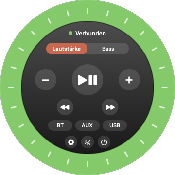

Born from a flat battery
The battery in my supplied dial kept running out, usually right when I wanted to switch between my smart speaker and my laptop or smartphone. So I built the remote I actually wanted: it lives in your menu bar, it is always charged, and it is one click away.
Everything within reach

Volume and bassSpin the ring, scroll, or tap + and −.
PlaybackPlay, pause, skip. One click.
InputsHop between Bluetooth, AUX and USB.
HotkeysGlobal shortcuts, even with the remote closed.
Status at a glanceGreen, orange or red: the ring tells you if you are connected.
English or DeutschYour call, one click in the settings.
The speaker doesn't report its levels, so the dial works in relative steps and shows no numbers.
Up and running in a minute
- Grab the ZIP from the latest release and compare its SHA-256 checksum with the one listed there.
- Unpack it and drag Puckless into Applications.
- Open it. The app is not notarized by Apple, so macOS may ask you to confirm: System Settings → Privacy & Security → Open Anyway.
- Allow Bluetooth access. Green ring in the menu bar? You are in control.
Questions? The user manual has the details.
The honest part
I would rather you know this upfront:
- Unofficial. Puckless-Remote works with the Logitech Z407, but it is not a Logitech product and has nothing to do with Logitech.
- Community-built protocol. It is reverse-engineered, so a speaker firmware update could break the app.
- One control connection at a time. The speaker accepts just one, shared with the supplied dial and other Macs. Using several? Pick On demand in the settings.
- Built with AI, reviewed in-house. I created it together with an AI (Claude, Anthropic). There has been no independent security review. Read the disclaimer and the review report for the details.
- Still young. So far tested with one speaker and one Mac. Your feedback helps.
Like it? Fuel it with a coffee
Puckless-Remote is free and stays free. If it makes your desk a little nicer, a coffee on Ko-fi is a lovely thank-you. Completely optional. This page only links to Ko-fi and loads nothing from there.